Panorama apartments are situated in the village called Dragove on the island of Dugi Otok just off the coast of Zadar. The island itself is 44,5 km long and consists of 12 villages. We are in the quiet village with just a small number of inhabitants and therefore this is a great serenity retreat from the outside world. The island is renowned for not being a commercial navel and for its unspoiled nature. It is very popular among cyclists, divers and adventurers. We have 5 fully fitted apartments that feature 3 hot tubs, a sun deck with beautiful sea view and kayaks & bicycles. Please refer to our Offers page for the detailed info about the apartments and the prices.
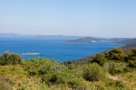There is a big difference whether you are visiting in the summer, or out of the main season. If you are visiting in the summer there are plenty of activities for you to engage with. A bit different story is if you are visiting outside of the season. Normally, there is nothing much to do but to enjoy the silence and to unwind, that is where we excel. With two hot tubs, sauna, three kayaks and a few workout machine, we offer you a serenity with just enough to do so you are not bored.
just 2,5 km away as it is a beautiful secret gem where you can enjoy time passing by with your special one, or with the entire family. Just before Veli zal on the side of the road is very well known Fast Food Zlata, where you can enjoy in various dishes, or even just to stop by for a drink or an ice cream.
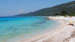is the most famed beach of all and it is around 9 km away. There are several beach bars and fast food venues available on the spot.
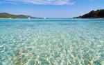 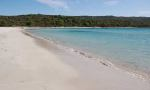is the closest beach from the accommodation and it is around 1,5 km away, or if you are keen to walk down the hill, it is 600 meters. There you can find a pier you can jump from, a small pebble beach and a World War II submarine tunnel that offers a piece of history. It is great for hikers as well who are visiting outside of the main season. In the vicinity is a small grill that operates during the day and offers grilled meat & fish and refreshments.
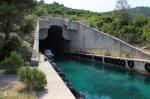is 13 km from us and it is the tallest lighthouse in the whole Adriatic. The site is the go - to place for many romantic souls to do weddings and photo sessions, due to its amazing sunset and breathtaking view. There is a beach in the vicinity and about 1 km from the shore is the location of the shipwreck that sank in 1984. It is a very popular site for snorkeling and diving. It is accessible by boat or kayak, and it is equally popular in the summer and outside of the main season.
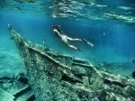 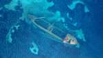
is around 10 km away and it is only accessible by sea. It is a great destination for kayak enthusiasts and dive adventurers in the summer time and outside of the main season. Usually the starting point is Brbiscica beach, where you can lay
down for a sunbath and take a swim. It is 450 meters from the cave.
is a cave around 18 km from us and it is an interesting geological and historical destination. The path leading to the entrance is quite rough and it is advisable to leave your car near the main road and walk the rest of the way, which is around 2,5 km long. It is good for cycling and trekking, the view is breathtaking.
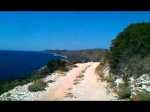 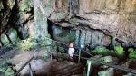 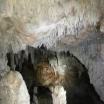is 25 km away and it is the only natural park on the island. It is open to enter all year around, however, it is chargeable only from April to October. It is great for cyclists, adventurers, explorers. There is plenty to see there. You will need to allocate a whole day to it.
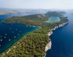 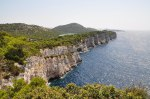